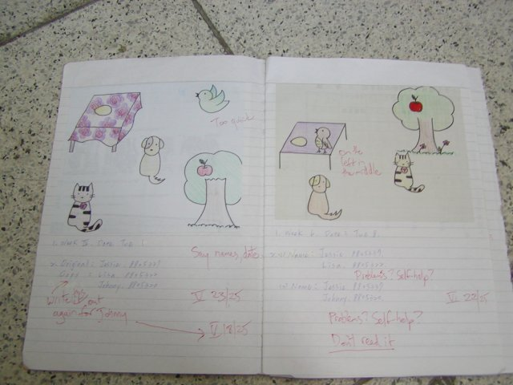
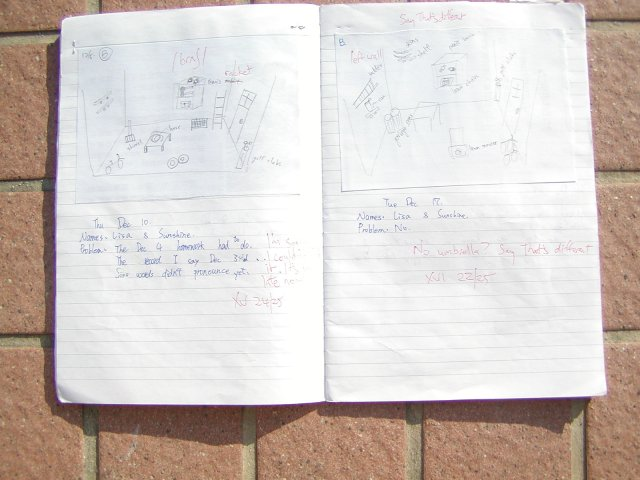
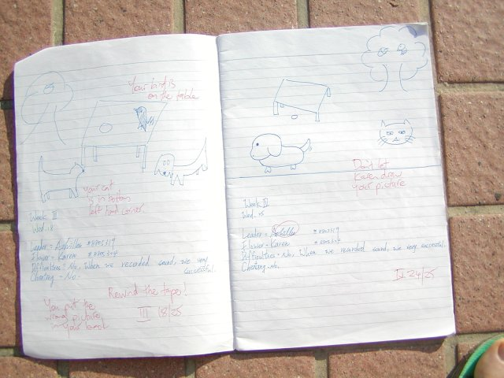
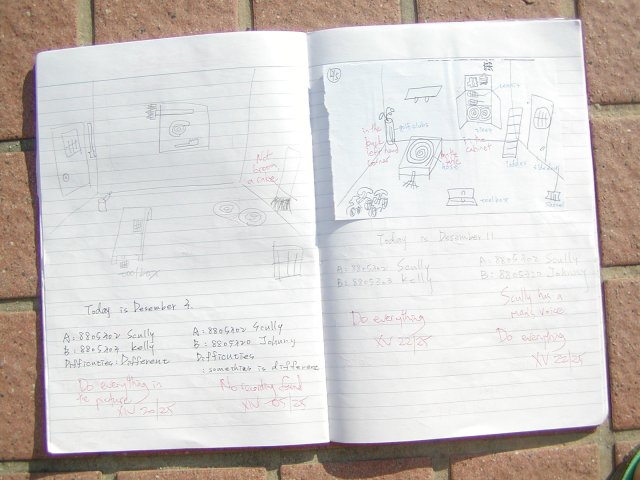
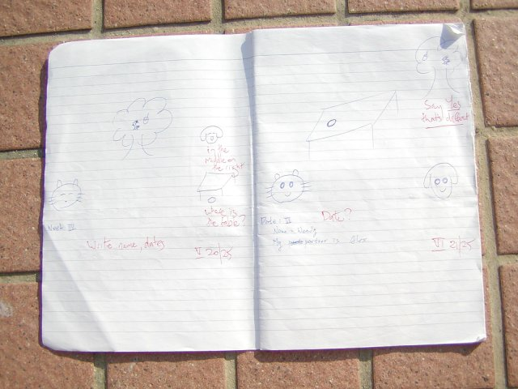
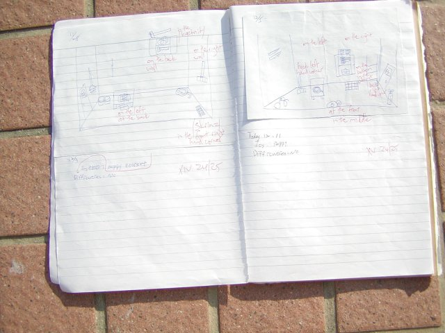

Students copied the pictures I distributed in the lesson and then together with a partner I assigned them, recorded outside class on tape a conversation as they tried to find how many differences there were between the pictures, without looking at each other's picture.
I asked them to tell me what they found difficult about the task and ways they helped themselves to make it easier.
These ways included writing down what they recorded on to the tape. Many students looked at each others' pictures. In the midterm and final exams, they had to do it without looking, or using Chinese.
This was a successful genre of activity, but the logistics of grading the homework (collecting tapes, using tape recorders, finding the right place on the tape, listening to the tapes, deciding if they had found a difference or not) led me to move on from description of objects in space to dictation of text (see PairDictation), on one hand, and JigSaw activities, on the other.
     